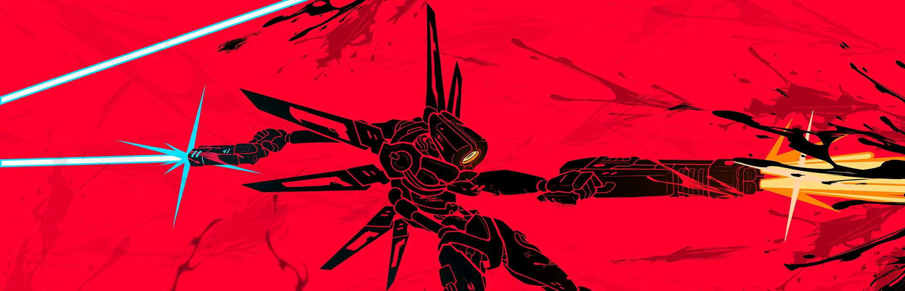
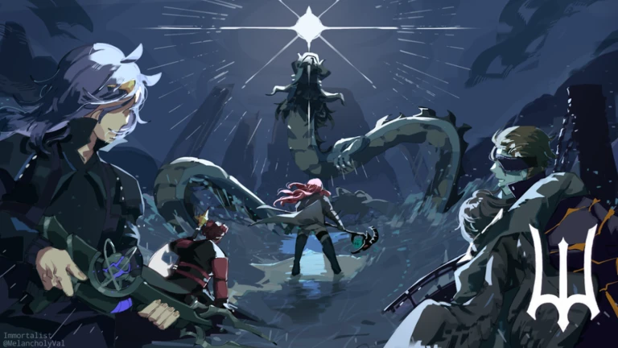
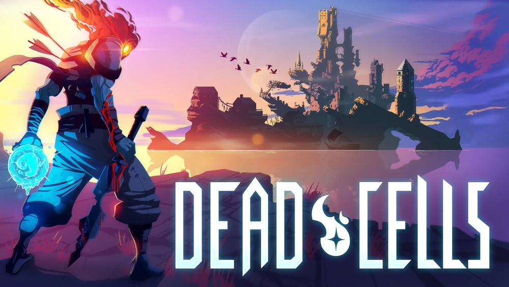

Gaming; I enjoy playing a wide variety of games, I don't just stick to one genre.
I try to play any game that I get recommended, regardless of its content, to keep my palette broad.
Here are some of the games I have enjoyed and have sunk a few hundred hours into them;

ULTRAKILL is currently has been my favorite game for 3 years, but what is ULTRAKILL?
ULTRAKILL
is a fast-paced ultraviolent retro FPS combining
the skill-based style scoring from character action games with unadulterated
carnage inspired by the best shooters of the '90s. Rip apart your foes with
varied destructive weapons and shower in their blood to regain your health.
Deepwoken's also one of the games that I've been playing, but what is Deepwoken?
Deepwoken
is an engaging and challenging hardcore fantasy game developed by Monad Studios.
The game includes permadeath, meaning that if you die, your character's progress resets to zero.
It is a Roblox game heavily inspired by Sekiro and the soulsborne series.


Dead Cells, does it feel like you already know what genre I like the most? What is Dead Cells?
Dead Cells
is a roguelite, metroidvania inspired, action-platformer. You'll explore a sprawling,
ever-changing castle... assuming you're able to fight your way past its keepers in
2D souls-lite combat. No checkpoints. Kill, die, learn, repeat.
I sunk around 2.1k hours in this game, but what is this game?
Elden Ring
is a third-person action RPG set in the Lands Between, a vast open world where players,
as the Tarnished, must explore, fight, and gather Great Runes to become Elden Lord and
restore the shattered Elden Ring. ELDEN RING features vast fantastical landscapes and
shadowy, complex dungeons that are connected seamlessly.
Manga; I enjoy reading manga, I love the vibrant art styles and intricate storytelling (some).
It allows me to immerse myself in fictional people and situations, especially if they're well written.
I can read any genre of any length and I don't judge the manga by its art style alone (unlike most people).
I used to study various art styles from different mangakas, I got good at drawing and mimicking them but
laziness consumed me and I've lost almost every skill I've honed.
Here are some of the mangs I have thoroughly enjoyed;
In the not-too-distant past, the Ice Witch blanketed the world in snow,
starvation and madness, leading the inhabitants to seek their salvation in fire.
With that, an unusual destiny unfolds for two young orphans,
Agni and Luna, blessed with the ability to regenerate.
But will this ability prove to be more of a curse than a blessing?
I really liked how unhinged and unfiltered this manga is, I sometimes wonder how it kept being published in Shounen Jump.
In the American Old West, the world's greatest race is about to begin.
Thousands line up in San Diego to travel over six thousand kilometers
for a chance to win the grand prize of fifty million dollars. With the era
of the horse reaching its end, contestants are allowed to use any kind
of vehicle they wish. Competitors will have to endure grueling conditions,
traveling up to a hundred kilometers a day through uncharted wastelands.
The Steel Ball Run is truly a one-of-a-kind event.
From the JoJo's series, this is by far the best part the author has ever written.
Handa Seishuu, a young and handsome calligrapher, is sent to Japan's
westernmost island after a certain incident. On the very first day
of his new life in the countryside, Sensei, as he comes to be called,
meets the simple and innocent Naru, a native kid. Follow the
(mis)adventures of this city-bred, hot-and-cold Sensei as he deals
with his new neighbors' never-ending antics.
It was a very very fun read, the story is about the characters and their daily lives and how it changed the protagonist's character.